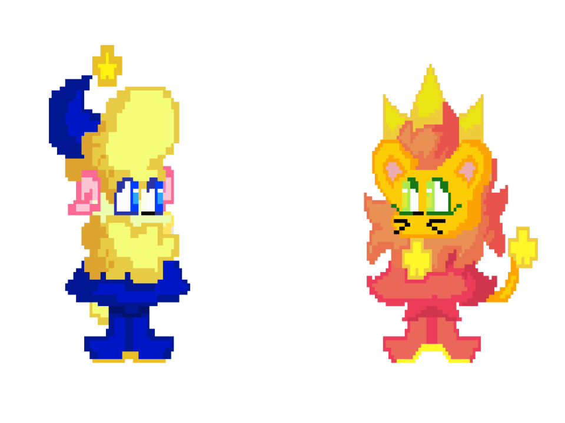
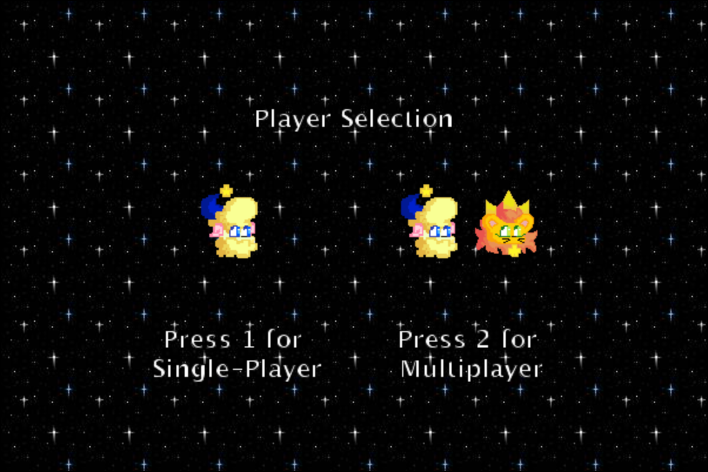
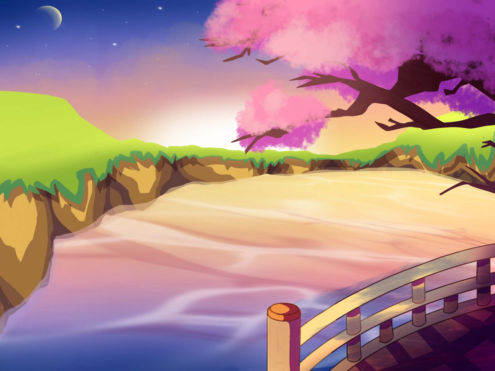

Hello there! My name is Aizza and I'm a third-year Computer Science major at the University of California, Irvine. During my freetime, I love to play with my pet cat, engage in some worldbuilding, play video games, and draw! Once I graduate, my goal is to develop and publish my own video game! Click here to visit my LinkedIn page.
Feel free to browse and take a look at the many projects I've worked on throughout the years!
Dreamscapers is a platform game I developed as a final project for my AP Computer Science class in 2019. Completed over the course of four weeks, this game was produced using Greenfoot, a Java-based IDE. The game stars Rem the Ram (left) and Sol the Lion (right).
Dreamscapers offers two game modes: single player and multiplayer mode.

In single player mode, you would play as Rem, where you jumped across platforms to dodge and fight against the "Clocker" enemies. Rem's attack involves shooting star fragments, which take the Clockers down in a single hit.
In multiplayer mode, you could grab a friend to join your gaming se ssion, with both of you could play against each other as Rem and Sol. Sol's main attack is similar to Rem's, except it shoots flames instead of star fragments. To win the game, the player must hit their opponent three times using their respective attack.
Below are some of the pieces I've completed in recent years, all illustrated on Procreate for the iPad.
 Cherry Blossom Dawn
September 7, 2020
Moonlit Cliffside
September 14, 2020
Verduous Wonderland
September 20, 2020
Red Velvet Cookie from Cookie Run Kingdom
September 24, 2021
Romie the Bard
September 19, 2021
The piece titled Red Velvet Cookie from Cookie Run Kingdom took me about 2 hours and 58 minutes to complete. The following is a recording of my drawing process, compressed into a 30 second video!